Inspección aérea
de alta precisión
Servicios profesionales de drones para minería, energía e industria. Datos precisos, seguros y en tiempo récord.
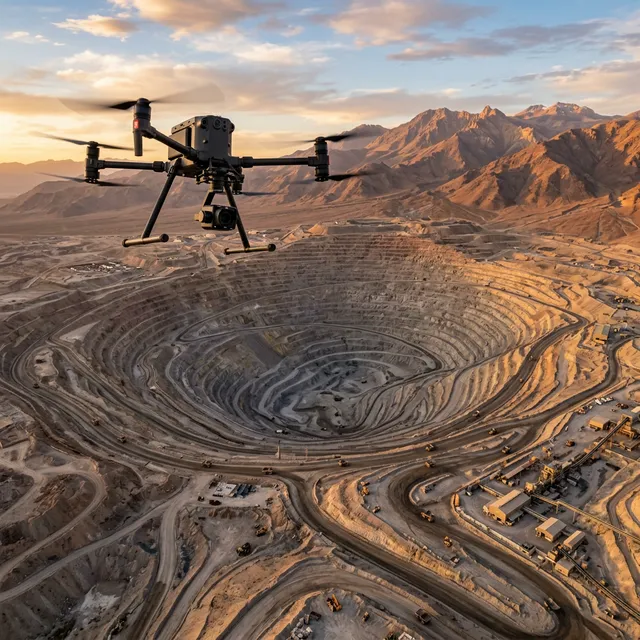
7 servicios especializados con flota propia
9 drones DJI de última generación, sensores industriales certificados y módulos RTK para precisión centimétrica. Haz clic en cualquier servicio para ver el detalle completo.
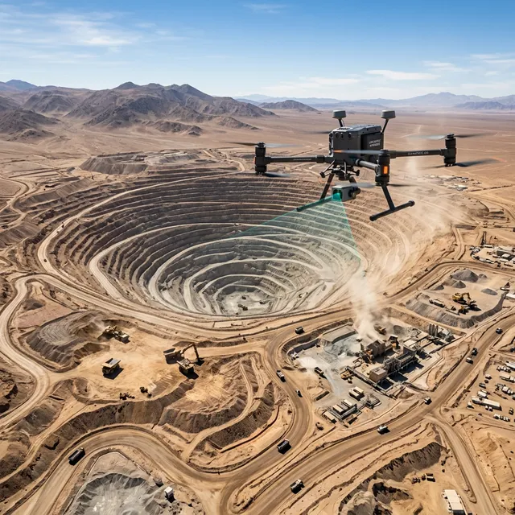
Topografía LiDAR & Fotogrametría
Nubes de puntos 3D, ortomosaicos, MDE/MDS y cubicación con precisión RTK centimétrica.
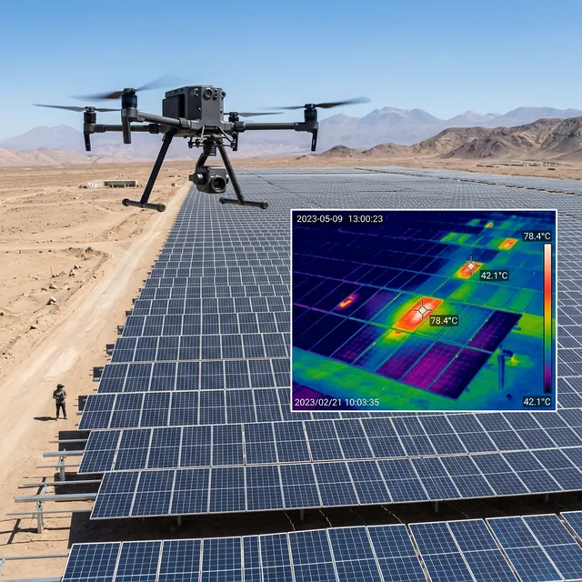
Termografía e Inspección Térmica
Mapas térmicos, detección de puntos calientes en paneles solares, líneas eléctricas y fugas en plantas industriales.
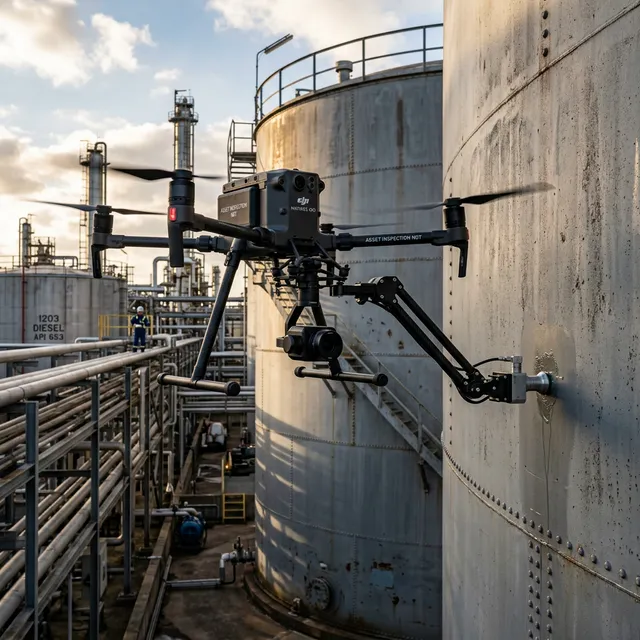
Medición de Espesores (NDT)
Ensayo no destructivo por ultrasonido en chimeneas, estanques API 653, ductos y recipientes a presión. Sin andamios, sin parar operación.
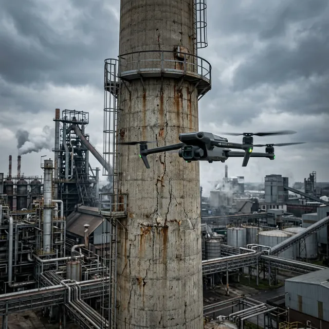
Inspección Visual de Estructuras
Revisión de torres, chimeneas, puentes y antenas con zoom óptico y FPV. Detección de fisuras, corrosión y daños.
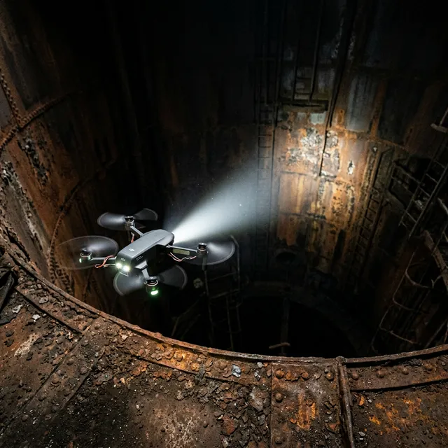
Interiores & Espacios Confinados
Inspección de bodegas, túneles, calderas, silos y espacios confinados sin exposición humana a riesgos.
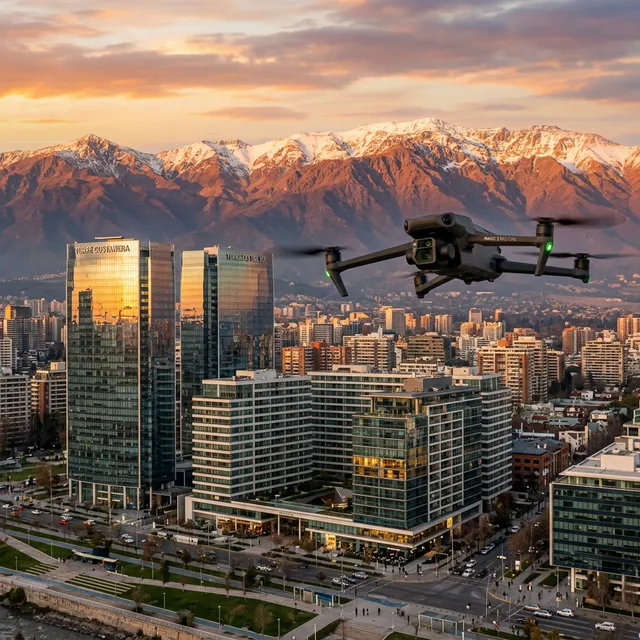
Video & Fotografía Cinematográfica
Producción 5.1K/4K con cámara Hasselblad para reportes corporativos, inmobiliaria, marketing y seguimiento de obras.
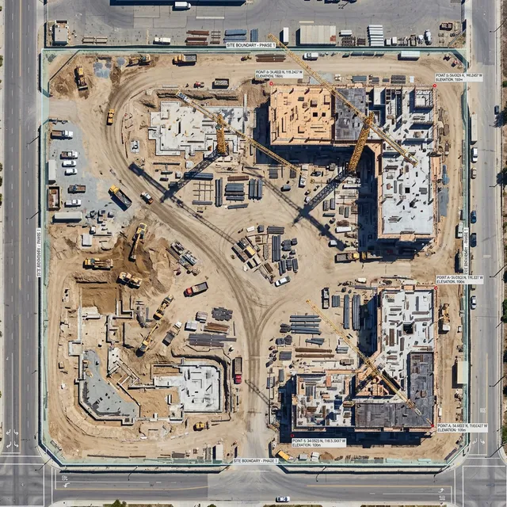
Seguimiento de Obras y Avance
Reportes periódicos de avance, comparación temporal y ortomosaicos secuenciales con precisión RTK.
Cotiza tu proyecto al instante
Configura los parámetros y obtén una propuesta técnica económica con desglose completo en UF.
¿Qué incluye cada entregable?
Conoce en detalle cada producto técnico que puedes solicitar.
Ortomosaico + Nube de Puntos
Imagen aérea georeferenciada de alta resolución (2-3 cm/px) y nube de puntos 3D en formato LAS/E57.
Informe de Inspección Visual
Documento PDF con registro fotográfico detallado de cada elemento inspeccionado.
Modelo 3D / MDE / MDS
Modelo digital tridimensional para análisis topográfico avanzado, cubicación y diseño.
Informe Termográfico
Análisis con cámara infrarroja radiométrica que detecta diferencias de temperatura.
Video Editado 4K/5.1K
Producción audiovisual con cámara Hasselblad 5.1K, color grading y música profesional.
Informe NDT — Espesores (API 653)
Medición ultrasónica de espesores en tanques y tuberías según norma API 653.
GIS / KML / Shapefile
Archivos geoespaciales compatibles con Google Earth, QGIS y ArcGIS.
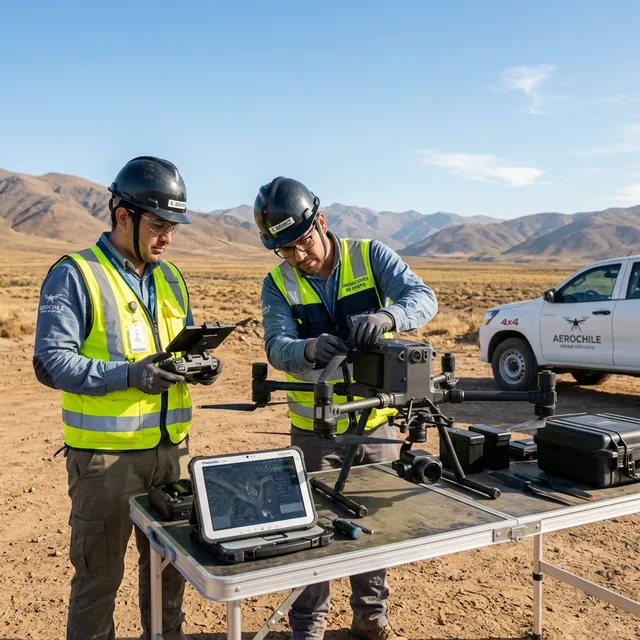
La experiencia que tu operación necesita
Somos operadores certificados con años de experiencia en los entornos más exigentes de la industria chilena.
Certificados DGAC & RPAS
Operamos con todas las certificaciones exigidas por la autoridad aeronáutica de Chile.
9 drones + módulos RTK
Mavic 3 Pro Cine, Mavic 4 Pro, Matrice 400 (LiDAR + Espesores), Matrice 4T/4E, Neo y FPV.
Seguridad operacional
Protocolos rigurosos de vuelo que garantizan cero incidentes en más de 500 operaciones.
Entrega rápida de datos
Procesamos y entregamos informes técnicos en 48 horas con Pix4D y DJI Terra.
Galería de proyectos
Cada imagen representa un proyecto entregado con excelencia. Estos son algunos de nuestros trabajos recientes.
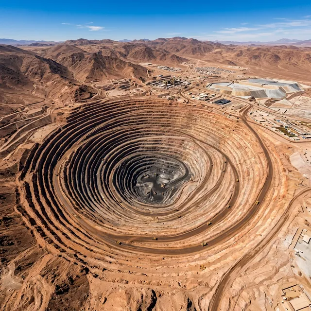
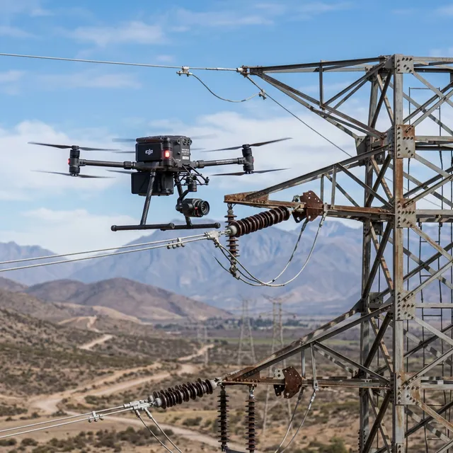
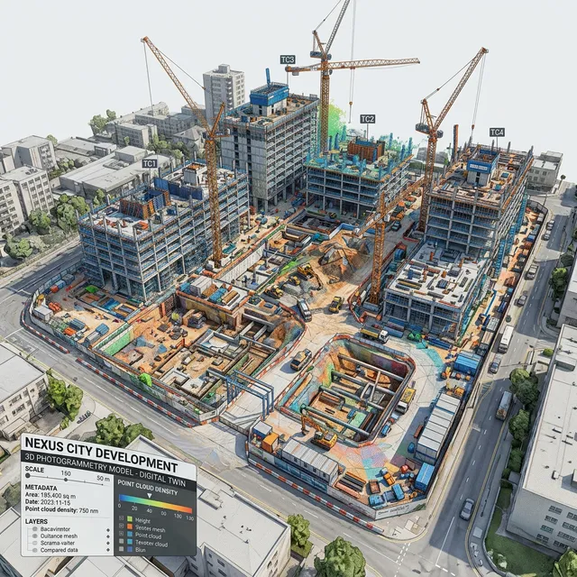
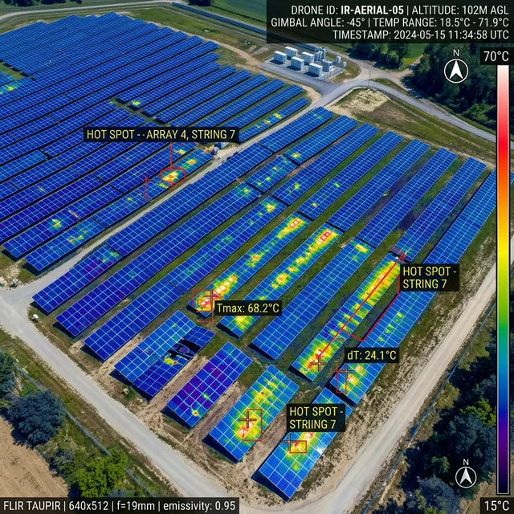
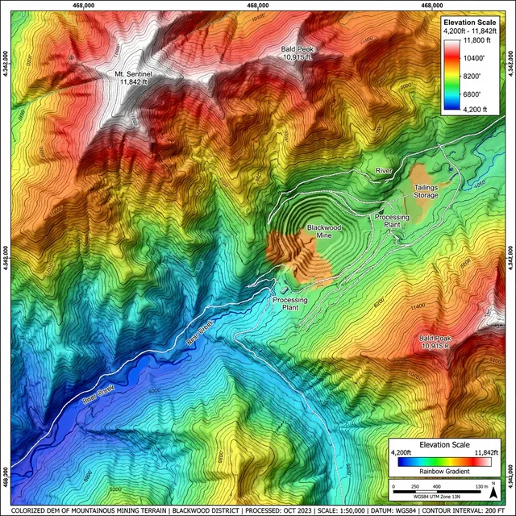
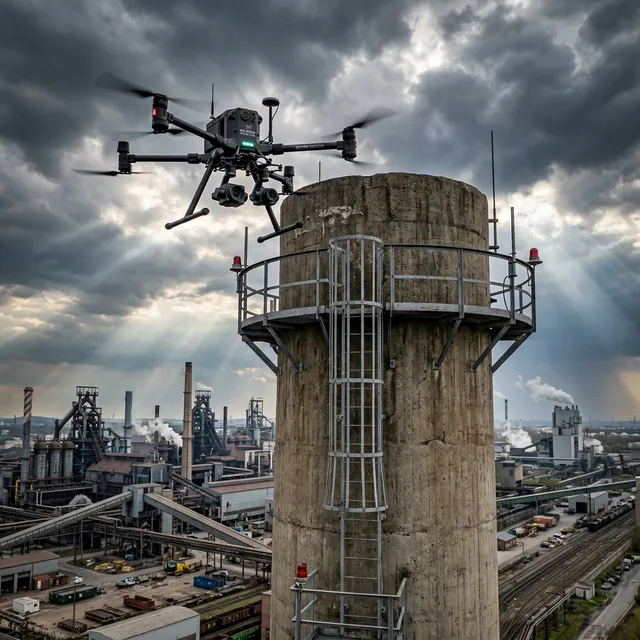
Pilotos Certificados por la DGAC
Operaciones seguras cumpliendo rigurosamente con la normativa DAN 151 y DAN 91. Volamos con seguros de responsabilidad civil y protocolos estrictos de seguridad operacional.
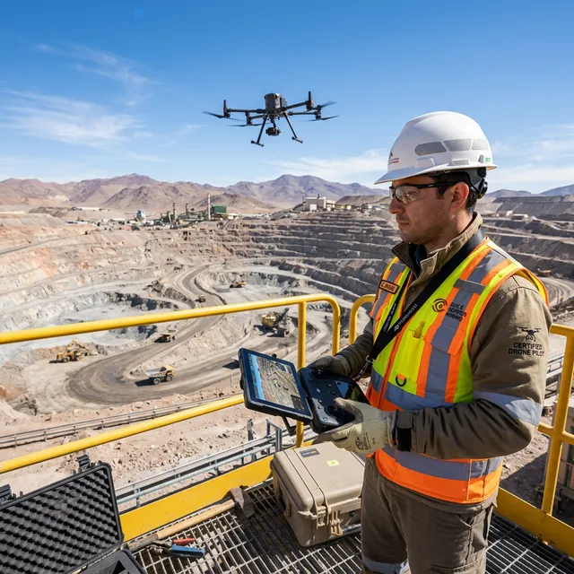
Confianza comprobada
"ConDron nos entregó un levantamiento topográfico increíblemente preciso en la mitad del tiempo que nos tomaba con métodos tradicionales. Profesionalismo total."
"La inspección termográfica de nuestras líneas de alta tensión fue impecable. Detectaron fallas que no habríamos encontrado de otra manera. 100% recomendados."
"Excelente servicio de medición de espesores. Su dron con sensor ultrasónico nos evitó montar andamios costosos. Rápido, seguro y con datos confiables."
Todo lo que necesitas saber
Resolvemos las dudas más comunes sobre nuestros servicios de drones industriales.
¿Qué servicios de drones ofrece ConDron?
ConDron ofrece 7 servicios especializados: topografía LiDAR y fotogrametría, termografía e inspección térmica, medición de espesores NDT (API 653), inspección visual de estructuras, interiores y espacios confinados, video y fotografía cinematográfica 5.1K/4K, y seguimiento de obras. Operamos con una flota de 9 drones DJI de última generación.
¿ConDron tiene certificación DGAC?
Sí, ConDron opera con certificación AOC (Certificado de Operador Aéreo) y licencias RPAS otorgadas por la DGAC Chile bajo normativa DAN 151 y DAN 91. Gestionamos todos los permisos de vuelo para nuestros clientes sin costo adicional.
¿En qué regiones de Chile operan?
Operamos en todo Chile con base en Santiago. Nuestras principales zonas de operación incluyen la Región Metropolitana, Antofagasta, Atacama, Coquimbo y Valparaíso. Hemos realizado más de 500 vuelos en proyectos mineros, energéticos e industriales a lo largo del país.
¿Cuánto cuesta un servicio de drones?
Los precios son referenciales por jornada: Video y Fotografía 4K desde 12 UF, Fotogrametría + Inspección desde 25 UF, e Industrial (espesores NDT + termografía) desde 40 UF. Puedes usar nuestro cotizador online para obtener un presupuesto personalizado al instante.
¿Qué es la fotogrametría aérea y para qué sirve?
La fotogrametría aérea genera modelos 3D, ortomosaicos y nubes de puntos a partir de imágenes capturadas por drones. Sirve para levantamientos topográficos de alta precisión en minería, construcción e ingeniería civil. ConDron procesa los datos con Pix4D y DJI Terra con precisión RTK centimétrica.
¿Cómo funciona la medición de espesores con dron?
Utilizamos drones DJI Matrice 400 equipados con sensores ultrasónicos PTG6/PTG8 que se posan sobre estructuras metálicas (chimeneas, estanques API 653, tuberías) para medir el grosor del material según norma API 653. Esto elimina la necesidad de andamios, reduce costos y riesgos operacionales.
¿Cuánto tiempo tardan en entregar los resultados?
Para video y fotografía, la entrega es en 48 horas. Para fotogrametría, inspección profesional e informes NDT, entregamos resultados completos en 48 a 72 horas. En servicios urgentes podemos entregar en menos de 72 horas con recargo.
¿Qué equipos y drones utilizan?
Operamos con 9 drones DJI: Matrice 400 (LiDAR L3 + NDT PTG6/PTG8), Matrice 4T (cámara térmica 640×512), Matrice 4E (fotogrametría 56MP), Mavic 4 Pro (visual), Mavic 3 Pro Cine (Hasselblad 5.1K), DJI Neo (interiores) y FPV Mini (espacios confinados). Todos con módulos RTK disponibles.
¿Es seguro volar drones en zonas industriales?
Sí, ConDron mantiene un récord de 100% de seguridad operacional en más de 500 vuelos. Operamos bajo protocolos rigurosos, certificación DGAC vigente, seguros de responsabilidad civil y análisis de riesgo previo a cada operación.
¿Cómo solicito una cotización?
Puedes usar nuestro cotizador online, completar el formulario de contacto, escribirnos a contacto@condron.cl, llamar al +56 9 7986 0843 o contactarnos por WhatsApp disponible 24/7.
Conversemos sobre tu proyecto
Cuéntanos qué necesitas y te entregaremos una cotización personalizada en menos de 24 horas.